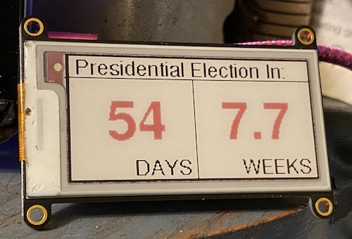

I like doing IoT with the Adafruit Huzzah, which is an ESP8266 (the little brother of the ESP32, having only WiFi, no Bluetooth). It has micro USB and a LiPo charger circuit. It's a little more expensive than a no-name ESP32, but I got hooked on these a while back and always keep a few spares for random projects. At some point I ended up with an two-color eInk “FeatherWing” that fits directly on the Huzzah. I think maybe that was through an old AdaBox?
At any rate, it's a decent little setup to show an example of how to use the election countdown timer on my desk.

Feel free to use and adapt it to your own boards and displays. Note that the code, as written, doesn't do much to conserve power. It keeps the wifi constantly up. If your application will be battery-operated, you may want to take that into consideration.
I've made an API available at https://api.electioncountdown.org/ElectionCountdown.
https://api.electioncountdown.org/ElectionCountdown?brief=0 (default) will return all fields.
https://api.electioncountdown.org/ElectionCountdown?brief=1 will return only the days
and weeks fields. This is useful for parsing in small memory footprint devices, such as an
Arduino.
The following fields are returned, or a subset, depending on the brief parameter:
now : The current date.target : Target date, 2020-11-03.tzinfo : The calculation is for the US/Pacific timezone.days : Number of days until election, or -1 if it was in the past.weeks : Number of weeks until election, rounded to one decimal place.label : Label for this date..Beyond CORS headers, I have not yet put many restrictions around the API. I'd like to provide the API until election day to help raise awareness. But since the results do not change often, I would like to request you limit your calls to once every 60 minutes.
If a HTTP referrer was passed in, the CORS restrictions are limited to this website. If no referrer was passed
in — such as when using curl or connecting from an embedded device — then
* is returned.
If you are working on a project that requires a custom CORS header, please contact me and we can discuss adding a new exception.
This code consists of two parts: a front end and a back end. Both parts are what kids these days call “serverless.”
The back end is a simple REST API that returns a countdown, in terms of days and weeks. It takes care of timezones and time math, giving you a snapshot answer for “now.” While this could have been done entirely in JavaScript on the front end, the intention here is to provide a simple API for Internet of Things (IoT) devices to query. Not all IoT devices have accurate clocks and date math on small form-factor devices adds complexity.
The back end is a simple AWS Lambda function, written in Python. It is fronted by an AWS API Gateway instance running through a custom domain name.
The front end is a simple static website that uses JavaScript to hit the back end API and retrieve the number of days and weeks. It is served from an AWS S3 bucket, routed through AWS Cloudfront for caching and SSL certificates.
The source code can be found at https://github.com/BrianEnigma/ElectionCountdown. It is licensed under the the Creative Commons Attribution-NonCommercial-ShareAlike 4.0 International License.